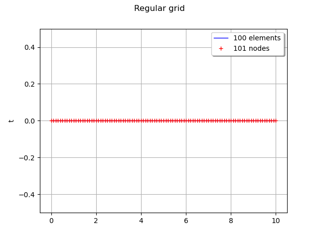
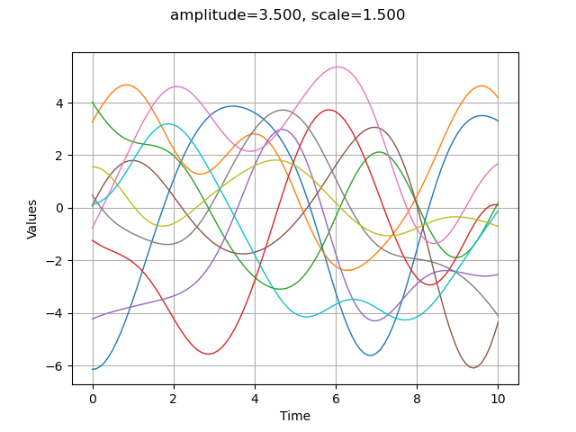
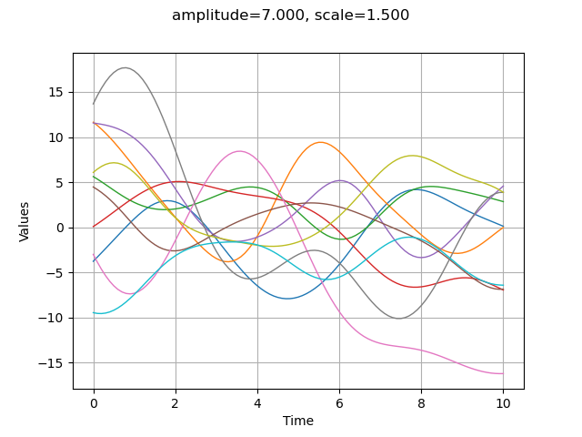
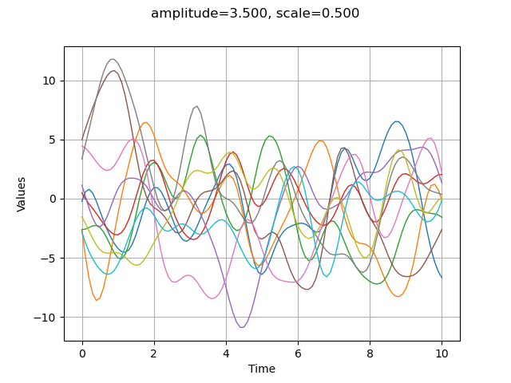
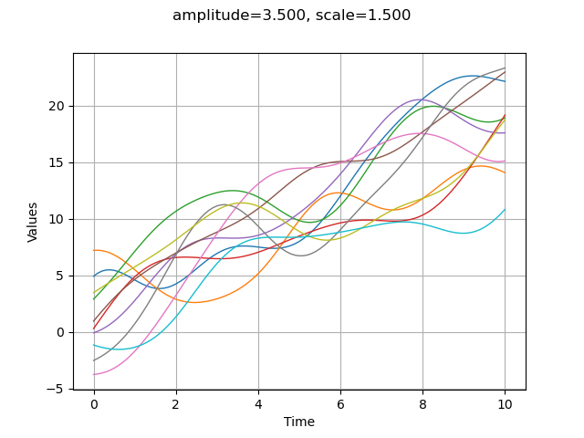
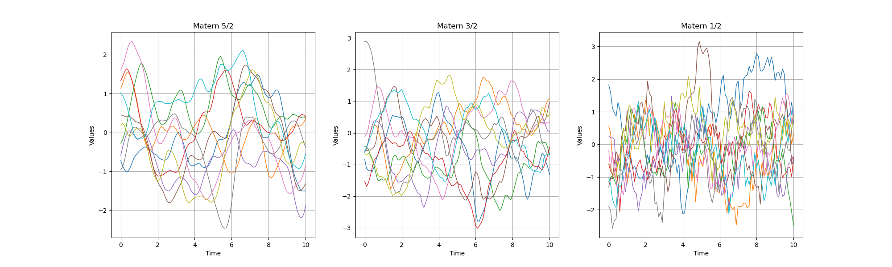
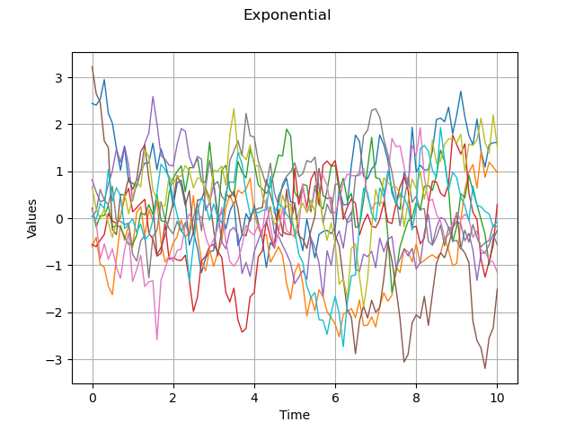

Note
Go to the end to download the full example code
Compare covariance models¶
The main goal of this example is to briefly review the most important covariance models and compare them in terms of regularity.
We first show how to define a covariance model, a temporal grid and a gaussian process. We first consider the squared exponential covariance model and show how the trajectories are sensitive to its parameters. We show how to define a trend. In the final section, we compare the trajectories from exponential and Matérn covariance models.
References¶
Carl Edward Rasmussen and Christopher K. I. Williams (2006) Gaussian Processes for Machine Learning. Chapter 4: “Covariance Functions”, www.GaussianProcess.org/gpml
The anisotropic squared exponential model¶
The SquaredExponential class allows one to define covariance models:
 is the amplitude parameter,
is the amplitude parameter, is the scale.
is the scale.
import pylab as pl
from openturns.viewer import View
import openturns as ot
import openturns.viewer as viewer
ot.Log.Show(ot.Log.NONE)
Amplitude values
amplitude = [3.5]
# Scale values
scale = [1.5]
# Covariance model
myModel = ot.SquaredExponential(scale, amplitude)
Gaussian processes¶
In order to create a GaussianProcess, we must have:
a covariance model,
a grid.
Optionnally, we can define a trend (we will see that later in the example). By default, the trend is zero.
We consider the domain ![\mathcal{D}=[0,10]]() . We discretize this domain with 100 cells (which corresponds to 101 nodes), with steps equal to 0.1 starting from 0:
. We discretize this domain with 100 cells (which corresponds to 101 nodes), with steps equal to 0.1 starting from 0:
![(x_0=x_{min}=0,\:x_1=0.1,\:\ldots,\:x_n=x_{max}=10).]()
xmin = 0.0
step = 0.1
n = 100
myTimeGrid = ot.RegularGrid(xmin, step, n + 1)
graph = myTimeGrid.draw()
graph.setTitle("Regular grid")
view = viewer.View(graph)

Then we create the gaussian process (by default the trend is zero).
process = ot.GaussianProcess(myModel, myTimeGrid)
process
Then we generate 10 trajectores with the getSample method. This trajectories are in a ProcessSample.
nbTrajectories = 10
sample = process.getSample(nbTrajectories)
type(sample)
We can draw the trajectories with drawMarginal.
graph = sample.drawMarginal(0)
graph.setTitle("amplitude=%.3f, scale=%.3f" % (amplitude[0], scale[0]))
view = viewer.View(graph)

In order to make the next examples easier, we define a function which plots a given number of trajectories from a gaussian process based on a covariance model.
def plotCovarianceModel(myCovarianceModel, myTimeGrid, nbTrajectories):
"""Plots the given number of trajectories with given covariance model."""
process = ot.GaussianProcess(myCovarianceModel, myTimeGrid)
sample = process.getSample(nbTrajectories)
graph = sample.drawMarginal(0)
graph.setTitle("")
return graph
The amplitude parameter sets the variance of the process. A greater amplitude increases the chances of getting larger absolute values of the process.
amplitude = [7.0]
scale = [1.5]
myModel = ot.SquaredExponential(scale, amplitude)
graph = plotCovarianceModel(myModel, myTimeGrid, 10)
graph.setTitle("amplitude=%.3f, scale=%.3f" % (amplitude[0], scale[0]))
view = viewer.View(graph)

Modifying the scale parameter is here equivalent to stretch or contract the “time”  .
.
amplitude = [3.5]
scale = [0.5]
myModel = ot.SquaredExponential(scale, amplitude)
graph = plotCovarianceModel(myModel, myTimeGrid, 10)
graph.setTitle("amplitude=%.3f, scale=%.3f" % (amplitude[0], scale[0]))
view = viewer.View(graph)

Define the trend¶
The trend is a deterministic function. With the GaussianProcess class, the associated process is the sum of a trend and a gaussian process with zero mean.
f = ot.SymbolicFunction(["x"], ["2*x"])
fTrend = ot.TrendTransform(f, myTimeGrid)
amplitude = [3.5]
scale = [1.5]
myModel = ot.SquaredExponential(scale, amplitude)
process = ot.GaussianProcess(fTrend, myModel, myTimeGrid)
process
nbTrajectories = 10
sample = process.getSample(nbTrajectories)
graph = sample.drawMarginal(0)
graph.setTitle("amplitude=%.3f, scale=%.3f" % (amplitude[0], scale[0]))
view = viewer.View(graph)

Other covariance models¶
There are other covariance models. The models which are used more often are the following:
SquaredExponential. The generated processes can be derivated in mean square at all orders.
MaternModel. When
 , it converges to the squared exponential model.
This model can be derivated
, it converges to the squared exponential model.
This model can be derivated  times only if
times only if  .
In other words, when
.
In other words, when  increases, then the trajectories are more and more regular.
The particular case
increases, then the trajectories are more and more regular.
The particular case  is the exponential model.
The most commonly used values are
is the exponential model.
The most commonly used values are  and
and  , which produce trajectories that are, in terms of regularity, in between the squared exponential and the exponential models.
, which produce trajectories that are, in terms of regularity, in between the squared exponential and the exponential models.ExponentialModel. The associated process is continuous, but not differentiable.
The Matérn and exponential models¶
amplitude = [1.0]
scale = [1.0]
nu1, nu2, nu3 = 2.5, 1.5, 0.5
myModel1 = ot.MaternModel(scale, amplitude, nu1)
myModel2 = ot.MaternModel(scale, amplitude, nu2)
myModel3 = ot.MaternModel(scale, amplitude, nu3)
nbTrajectories = 10
graph1 = plotCovarianceModel(myModel1, myTimeGrid, nbTrajectories)
graph2 = plotCovarianceModel(myModel2, myTimeGrid, nbTrajectories)
graph3 = plotCovarianceModel(myModel3, myTimeGrid, nbTrajectories)
fig = pl.figure(figsize=(20, 6))
ax1 = fig.add_subplot(1, 3, 1)
_ = View(graph1, figure=fig, axes=[ax1])
_ = ax1.set_title("Matern 5/2")
ax2 = fig.add_subplot(1, 3, 2)
_ = View(graph2, figure=fig, axes=[ax2])
_ = ax2.set_title("Matern 3/2")
ax3 = fig.add_subplot(1, 3, 3)
_ = View(graph3, figure=fig, axes=[ax3])
_ = ax3.set_title("Matern 1/2")

We see than, when increases, then the trajectories are smoother and smoother.
myExpModel = ot.ExponentialModel(scale, amplitude)
graph = plotCovarianceModel(myExpModel, myTimeGrid, nbTrajectories)
graph.setTitle("Exponential")
view = viewer.View(graph)

We see that the exponential model produces very irregular trajectories.